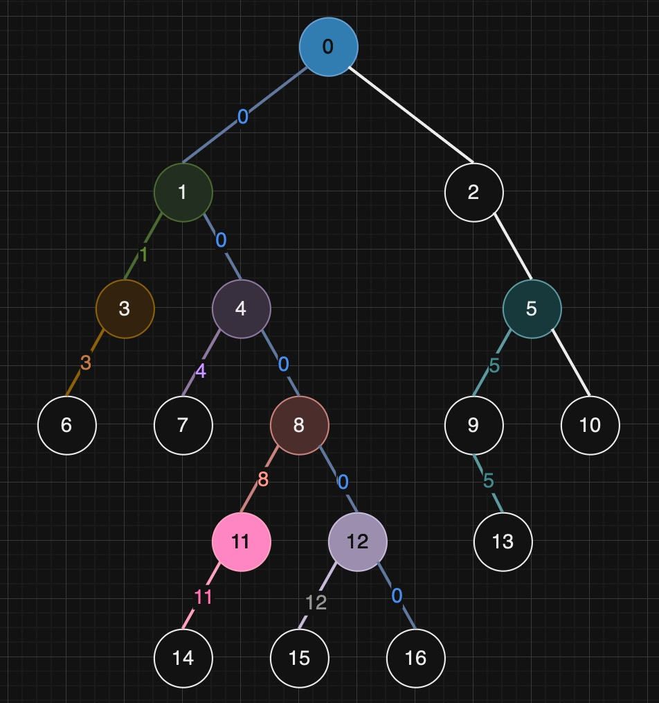
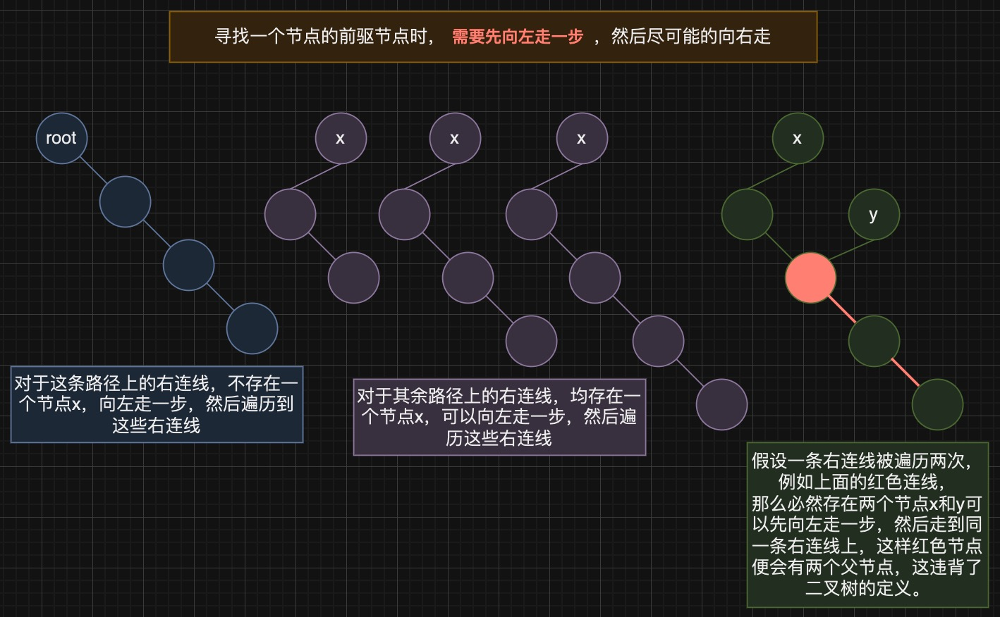

二叉树的中序遍历
1 问题描述[1]
给定一个二叉树的根节点 root ，返回 它的 中序 遍历 。
示例 1：

1 | |
示例 2：
1 | |
示例 3：
1 | |
提示：
- 树中节点数目在范围
[0, 100]内 -100 <= Node.val <= 100
进阶: 递归算法很简单，你可以通过迭代算法完成吗？
2 Solution: Recursion
1 | |
3 Solution: Stack-based Iteration
1 | |
3.1 迭代过程分析
假设我们要遍历下面这棵树，最开始 current 指向 1 ，表示我们想要中序遍历以 1 为根节点的这棵树
根据中序遍历的规则：
1 | |
要想中序遍历 1 这棵树
- 需要先中序遍历完
1的左子树2 - 然后才能遍历节点
1 - 最后对
1的右子树3进行中序遍历
所以我们首先将 current 1 节点压栈，然后更新 current 指向 current.left 2 表示首先对 1 的左子树 2 进行中序遍历
为什么要将 current 节点压栈？
保存访问路径，实现回溯
同理，若要对以 2 为根节点的树进行中序遍历，则需要先对 2 的左子树 4 进行中序遍历，同时将节点 2 压栈
同理，若要对以 4 为根节点的树进行中序遍历，则需要先对 4 的左子树 null 进行中序遍历，同时将节点 4 压栈
上面的过程对应
1 | |
现在以 4 为根节点的树的左子树 null 已经遍历完成，对节点 4 进行遍历（出栈），然后对 4 的右子树 7 进行中序遍历
这里的过程对应
1 | |
将节点 7 入栈，对 7 的左子树进行遍历
遍历节点 7 (出栈)，遍历节点 7 的右子树 null
现在栈顶元素 2 的左子树部分已经遍历完成，对节点 2 进行遍历（出栈），然后对 2 的右子树 null 进行中序遍历
现在栈顶元素 1 的左子树部分已经遍历完成，对节点 1 进行遍历（出栈），然后对 1 的右子树 3 进行中序遍历
后面的过程如下：
对 3 的左子树 5 进行遍历，5 遍历结束后遍历节点 3（出栈），然后遍历 3 的右子树 6
对以 6 为根节点的树中序遍历过程跟树 5 相同：先遍历 6 的左子树 null ,遍历节点 6, 遍历 6 的右子树 null，最终整棵树遍历完成。
上面的过程实际上是模拟了递归时对栈的使用过程。
3.2 代码细节思考
为什么不直接使用 Stack 类而是使用 Deque ？
1 | |
自Java 1.6起，Stack类被认为是遗留类，其使用在新的代码中不再推荐。Java平台库提供了Deque接口（双端队列），并推荐使用实现了Deque接口的ArrayDeque类作为栈的实现。ArrayDeque比Stack类有更好的性能。
4 Solution: Morris Traversal
KMP算法[4]（Knuth-Morris-Pratt字符串搜索算法）是由三位计算机科学家共同发明的，他们是：
• Donald Knuth（唐纳德·克努特）：美国计算机科学家，著有《计算机程序设计艺术》（The Art of Computer Programming）等多部经典计算机科学著作；
• Vaughan Pratt（沃恩·普拉特）：美国计算机科学家，斯坦福大学教授，对计算理论、特别是自动机理论和并发理论有重大贡献；
• James H. Morris（詹姆斯·H·莫里斯）：美国计算机科学家，曾在多家知名技术公司和大学任职，对计算机科学的多个领域有贡献。
这里的Morris便是上面的 James H. Morris（詹姆斯·H·莫里斯）。
4.1 算法介绍
Morris遍历算法能够在不使用栈或递归的情况下，以O(1)的空间复杂度和O(n)的时间复杂度遍历二叉树（n是树中节点的数量）。
Morris遍历的精妙之处在于利用了二叉树中大量的空闲指针（即那些原本指向NULL的右子指针），通过建立和断开这些临时链接，实现了对树的高效遍历，同时避免了对额外存储空间的需求。
以下是中序遍历的核心思想：
当前节点设置为根节点：开始时，将当前节点设置为树的根节点。
左子树处理：
- 如果当前节点的左子树存在，找到当前节点的前驱节点。
- 如果前驱节点的右子节点为空（即，还没有建立临时链接回当前节点），则将前驱节点的右子节点设置为当前节点，并将当前节点更新为其左子节点。
- 如果前驱节点的右子节点已经指向当前节点（表明已经处理过左子树），则将前驱节点的右子节点重新设为空（恢复树的原状），并输出当前节点（因为此时左子树已经遍历完成），然后将当前节点更新为其右子节点。
"前驱节点" 指的就是在中序遍历顺序下，当前节点之前被访问的那个节点。对于任何一个节点，如果你从这个节点出发，向左走一步，然后尽可能地向右走，最后到达的节点就是它的前驱节点。这个“最后到达”的节点，我们称之为最右节点/前驱节点，因为你不能再往右走了。
右子树处理：
- 如果当前节点没有左子树，则输出当前节点，并将当前节点更新为其右子节点。
重复上述步骤，直到当前节点为空。
Morris遍历算法最初是为二叉树的中序遍历设计的，因其能够在O(1)的空间复杂度下完成遍历，也可轻易修改以支持前序遍历。关于二叉树的后序遍历，Morris遍历的原理同样可以应用，但实现起来要复杂得多，因为后序遍历要求在访问节点的左右子树之后才访问该节点本身，这需要更复杂的回溯机制。
4.2 代码实现
1 | |
4.3 过程分析
同样以上面的树为例，遍历过程如下：
current 指向 1 , 1 存在左子树，找到 1 的 前驱节点 pre ，将 pre 的右儿子指向 1 (建立临时链接)
更新 current 为 current.left , current 指向 2 , 2 存在左子树，找到 2 的 前驱节点pre，将 pre 的右儿子指向 2 (建立临时链接)
更新 current 为 current.left, current 指向 4 ，4 没有左儿子，将 4 加入到结果列表中，将 current 指向 4 的右儿子
current 指向 7 , 7 没有左儿子，将 7 加入到结果列表，将 current 指向 7 的右儿子（从前面可知，7 是 2 的前驱节点，在这里 7 被遍历，下一个要被遍历的便是 2）
current 指向 2 , 2 存在左子树，找到 2 的 前驱节点 pre ，pre.right 不为 null (或者说指向了 current )，恢复树的原状（删除临时链接），遍历当前节点（因为此时 2 左子树已经遍历完成），并更新 current 为 current.right
current 指向 1 , 1 存在左子树，找到 1 的 前驱节点 pre ，pre.right 不为 null (或者说指向了 current )，恢复树的原状（删除临时链接），遍历当前节点（因为此时 1 左子树已经遍历完成），并更新 current 为 current.right
current 指向 3 , 3 存在左子树，找到 3 的 前驱节点 pre ，将 pre 的右儿子指向 3 (建立临时链接)
更新 current 为 current.left， current 指向 5 ，5 没有左儿子，将 5 加入到结果列表中，将 current 指向 5 的右儿子
current 指向 3 , 3 存在左子树，找到 3 的 前驱节点 pre ，pre.right 不为 null (或者说指向了 current )，恢复树的原状（删除临时链接），遍历当前节点（因为此时 3 左子树已经遍历完成），并更新 current 为 current.right
current 指向 6 , 6 没有左儿子，将 6 加入到结果列表，将 current 指向 6 的右儿子 null , 循环结束。
思考
- current 节点的遍历过程与上面的 Stack-based Iteration 方案相同吗？
相同，都是从根节点开始，沿着左子节点一直往下走，直到到达最左侧的节点，当到达最左侧节点后，转向访问该节点的右子树。唯一区别是 Stack-based Iteration 方案中会遍历 null 节点，而该方案不会。
在不考虑null节点的情况下，current的遍历路径是：[1, 2, 4, 7, 2, 1, 3, 5, 3, 6]
• 表示一路向左到达的节点。
• 表示转向右子树到达的节点。
• 表示通过回溯到达的节点。
• 表示加入结果列表的节点。
- 建立临时链接的目的是什么？
用于回溯，在不同的遍历方案中，回溯的实现方式各不相同：
• 在递归方案中，利用函数调用栈来回溯。
• 在基于栈的迭代方案中，使用显式栈来回溯。
• 在本方案中，通过建立临时链接进行回溯。
比如当节点 7 被遍历后，我们是通过先前创建的临时链接回溯到节点 2 继续遍历的。
4.4 时间复杂度分析
在上述代码中，时间复杂度的主要部分来源于两个核心操作：遍历节点（通过 current ）和寻找所有节点的前驱节点（ pre ）。
对 current 的操作时间复杂度：
每个节点通过 current 最多被访问两次，一次是向下访问到最左侧节点，另一次是通过建立的临时链接回溯。因此，对 current 的操作的时间复杂度为O(n)。
需要回溯的节点会被访问两次，例如节点
2，不需要回溯节点仅被访问一次，例如节点4寻找所有节点的前驱节点 pre ：
寻找单个节点的前驱节点时间复杂度是和树的高度相关的，为O(log n)，所以直觉上整个算法过程中对所有节点的前驱节点的查找整体时间复杂度为O(n * log n)，但是实际上这个过程的时间复杂度也为O(n)。
以下面这棵树为例：
在一棵二叉树中，任一节点的前驱节点可以这样查找：从当前节点出发，先向左走一步，随后一直向右走直到尽头，所到达的节点便是其前驱节点。
以节点
0为例，其查找过程是：先左移到节点1，再持续向右行进，依次通过节点4、8、12、16，将路径上的边进行标注（标注为0，表明是节点0的前驱节点查找路径）。对其他节点也采用同样的方法，并进行了相应的边标注。树中每条左连线恰好被遍历一次：对于任意一条连接父节点
a和子节点b的左连线，只有在寻找a的前驱节点时才会通过这条连线。至于右连线，它们被遍历的次数不会超过一次：
从根节点出发，沿着右子节点直线向下的路径上的右连线未被遍历，其余的右连线都恰好遍历了一次。
鉴于含有n个节点的二叉树有n-1条边，因此该过程的时间复杂度为O(n)。
除了根节点外，其余节点均存在父节点，且存在一条线与父节点相连，所以含有n个节点的二叉树有n-1条边。
因此，整个算法的时间复杂度为O(n)，其中n是树中节点的总数。
5 三种方案优缺点分析
这三种二叉树中序遍历的方案各有其优缺点，主要体现在空间复杂度、时间复杂度以及算法的复杂性上。下面是对这三种方案的优缺点对比：
方案一：递归（Recursion）
优点:
- 简洁易懂：递归方案的代码简洁，逻辑清晰，易于理解和实现。
- 自然的遍历方式：递归利用了函数调用栈，自然地实现了深度优先搜索（DFS），包括中序遍历。
缺点:
- 空间复杂度：在最坏情况下（树完全不平衡时），递归栈的深度可以达到O(n)，导致高空间复杂度。
- 栈溢出风险：深度很大的树可能导致调用栈溢出。
方案二：基于栈的迭代（Stack-based Iteration）
优点:
- 避免递归的栈溢出：使用显式栈代替递归调用的隐式栈，可以避免深度很大的树造成的栈溢出问题。
- 空间复杂度可控：空间复杂度主要取决于树的高度，最坏情况下为O(h)，h为树的高度，一般情况下比递归方法的空间复杂度要好。
缺点:
- 实现复杂性：相比递归方案，迭代方案在实现上更为复杂，代码可读性和可维护性略有下降。
方案三：Morris Traversal
优点:
- 空间复杂度低：Morris遍历的最大优点是空间复杂度为O(1)，不需要额外空间进行节点的存储。
- 原地遍历：通过修改树的结构（临时改变指针）来避免使用栈，遍历完成后恢复树的原状。
缺点:
- 复杂性高：Morris遍历算法的逻辑相比前两种方法复杂，对树的结构进行了临时修改，需要仔细处理以避免错误，对于初学者来说可能不太容易理解。
- 修改树结构：虽然最终恢复了树的原状，但算法执行过程中对树的结构进行了临时的修改，这在某些情况下可能是不可接受的。
总结：
- 如果栈溢出是一个问题，或者树的深度非常大，推荐使用基于栈的迭代方案。
- 如果对空间复杂度有严格要求，可以考虑Morris遍历。
- 对于大多数简单应用，递归方法因其简洁性而更受欢迎。